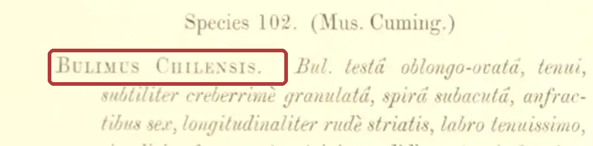
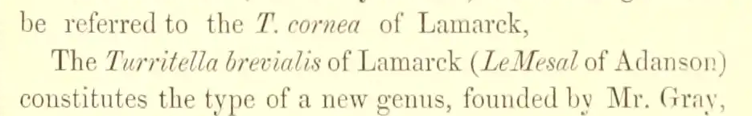
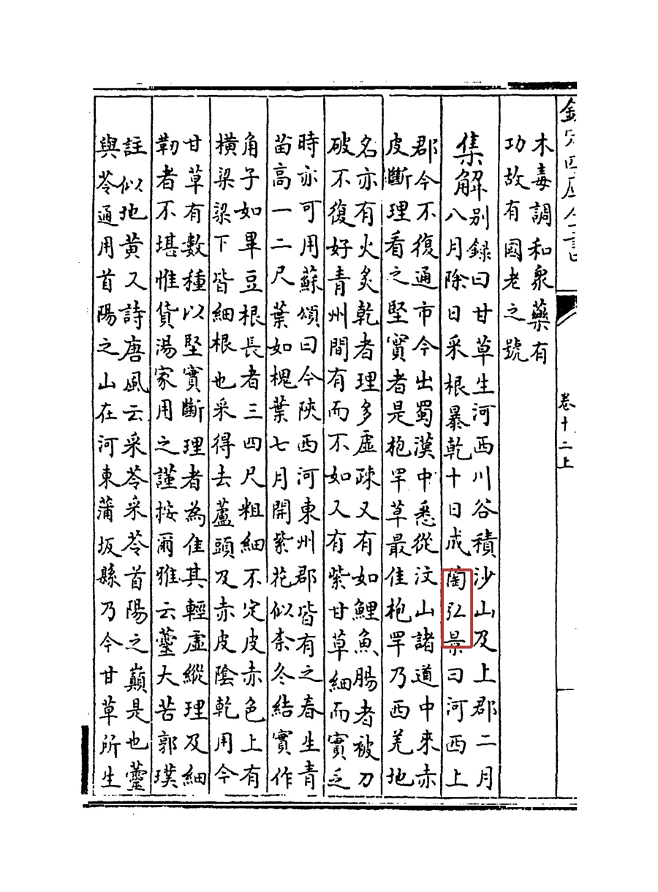
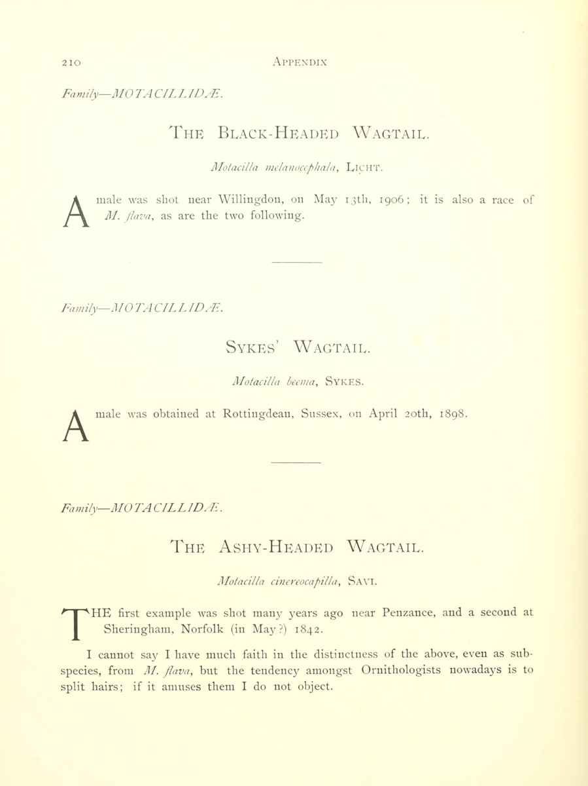

Deep Matters 2026 · Agents for Science
Where do AI agents lose evidence when they extract, ground and link data from historical scientific literature?
BioEvidenceBench follows an agent from a scanned page to a database record and measures where trust leaks out. It tests the steps an agent relies on; it is not itself an agent.
01 · Motivation
An 1849 shell book, read by a machine


An agent can quote this line perfectly and still file the wrong species.
The Biodiversity Heritage Library holds 64 million scanned pages like this one. Before an agent can use them, five steps have to go right.
02 · Methodology & 03 · Results
The agent's five steps, and where evidence leaked
accepted today: Motacilla flava
03 · Results · Quiz
Spot the fake
One name was printed in 1849. One was invented by a modern OCR model. Which is which?

Answer: B is on the page. DeepSeek-OCR-2 wrote A. Two letters, no spell-check flags it, and the page error rate barely moves; only a check on the names catches it.
04 · Case study: 本草綱目
Same name, two right answers


Bencao gangmu (Compendium of Materia Medica, 1578), 18th-century manuscript copy. Exploratory, 6 pages: 88% of names letter-perfect, 98% if variant forms count. An agent has to know which its user needs.
05 · Conclusion
Five rules for literature agents
- Test that names survive OCR, not the page error rate.
- Make the agent quote its source. It cost no recall.
- Two agents agreeing is not evidence.
- Test the database link on its own: names change.
- Write down what counts as a datum before scoring.
How it was tested



- 16 held-out pages, shells (1849) and birds (1907), each read three ways
- 607 labels made by hand before any model output; plan frozen before testing
- Design after Lei, Docherty & Cooper (2024, Digital Discovery)
- Materials papers have the same chain (untested): Fe₂O₃ → Fe2O3; "TiO₂" without its phase

Preprint, data and every run
github.com/dekunsun/BioEvidenceBench


ai4s.fyi · LinkedIn
Scans: Biodiversity Heritage Library via the IMPACT ground-truth set (CC BY 3.0); Reeve plate and 本草綱目 (CADAL) via Internet Archive, public domain; 本草綱目 text: Kanseki Repository (CC BY-SA 4.0). Limits: two English printed books and a six-page Chinese pilot; other languages, layouts and handwriting untested.